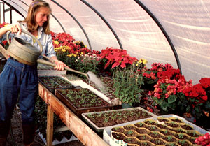
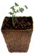
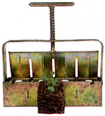
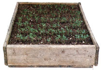
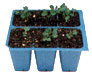
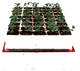
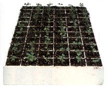
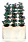
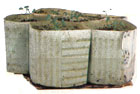

There are lots of ways to nurture those tender spring seedlings.
My first seed-starting container was a cutoff milk carton I'd saved from the school cafeteria. It made a fine and frugal little plant nursery. Of course, milk cartons still work, but today's home gardener can also choose from a confusing array of commercial seed-starting systems. What about these setups-are they gimmicks or godsends? How much do they cost, how long do they last, and how well do they work? To find answers to these questions, I put eight different seed-starting setups through three trial plantings. To begin, I planted a selection of vegetables and flowers, including lettuce, tomatoes, broccoli, celery, squash, marigolds, sweet Williams and zinnias. In later tests, I grew only kale from the same seed batch, so I could better compare seedling sizes.
All but one of the systems produced fine seedlings, but there were considerable differences in how each system worked and how easy it was to use. I comment on those differences and share my own personal preferences here. Still, different gardeners have different needs and opinions. Each of the eight seed-starting systems has supporters who prefer using it and who get good results.
So take my opinions with a grain of gardener's salt, and make your own choices. Most important, consider the needs of the plants you're starting. Change places with them on the windowsill for a moment, and make sure to properly use whatever system you choose:
Use a good soil mix. (A good homemade recipe is five parts shredded leaf mold or compost, five parts good fine topsoil and two parts of sharp sand. Adjust it if your soil is unusually heavy or light.) Keep the soil constantly moist until the seedlings germinate. Water thereafter whenever the top half-inch of soil gets dry. And frequently use a diluted fish emulsion or fish and kelp mix, especially if the seedlings are growing in a sterile soil medium. Provide adequate light. Windowsill seedlings will grow more slowly than those raised under artificial light. Fluorescent tubes work better than incandescent bulbs (they don't roast the plants) but need to be set up quite close to the starts and raised as the plants grow. The more tubes the better. Keep seedlings warm. If you can provide bottom heat to the soil, the plants will do fine with cooler air temperatures. Indeed, up to a point, plants double their growth rate for every 10°F rise in soil temperature.
Follow such steps and your seedlings won't end up longing for the great outdoors just so they can escape their seed starters.
Mother Tests The Seed Starters
A close look at eight home gardening setups
Description: Individual square or round pots made of pressed peat moss and plant nutrients. A popular brand called Jiffy Pots can be bought in connected groups of 12, called Jiffy Strips. They are used with standard plastic flats or specially sized Jiffy Set flats.
Durability: One-time use. Peat pots are meant to break down in the soil.
Ease of use: These plant-it-all containers have been popular with home gardeners for a good while, but I noticed a few potential drawbacks. Round pots seem a waste of space when compared to square ones. Individual pots are a pain to keep standing when you're filling them (sets are easier). And the peat walls tend to wick water away from the soil. Granted, this does promote good drainage and root aeration, but the extra waterings thus required promote algae growth, as well. You also need to tear peat pots when transplanting (they don't always break down readily), and you should bury them completely-any edge left above the surface will wick moisture away from the root zone.
Access: Local garden nurseries and many seed and garden supply catalogues, including Park Seeds (Cokesbury Rd., Greenwood, SC 29647). Eight Jiffy Strips (a total of 96 pots) cost $5.95 plus $1 shipping and handling.
Rating: * * Peat pots require too much watering and can be inconvenient to use.
Description: Spring-loaded metal devices used to produce cubes of soil for individual seeds. The plant cubes are then transplanted into the soil. Flats for these soil cubes can be wooden (with three walls to allow easy block removal), plastic or even the venerable half-gallon milk carton (cut in half longways, each half will hold exactly eight cubes).
Durability: The block maker should last indefinitely if well cared for. Individual soil blocks are used only once.
Ease of use: The key to success with block makers is the soil mix you use. It must contain enough peat moss to hold the cubes together without their becoming adobe hard. Nick Woodin, a market gardener in New York, has had success with a mixture of 50% peat moss, 50% compost and some lime to adjust the pH.
Watering can also be a bit tricky. Since each cube stands alone, the plants need to be watered frequently. Yet overhead watering must be gentle to avoid eroding the blocks, while watering from underneath, using capillary moisture, will cause the bottoms of the blocks to become mushy if too much moisture is present.
You can make as many or as few soil cubes as you need, and the long-lasting tool pays for itself in one or two seasons. But don't leave seedlings in soil blocks for much more than four to six weeks, as they're too shallow to support extended growth.
Access: "Some garden supply centers, as well as Gardener's Supply (128 Intervale Rd., Burlington, VT 05401) for $14.75 plus $2.75 for shipping and handling.
Rating: * * I like the concept, but my blocks don't stand up well to repeated waterings.
Wooden Flat
Description: Rectangular wooden container with slatted bottom boards spaced 1/8 inch to 1/16 inch apart for drainage. The standard depth is three inches for seedlings that will stay in the starter for up to a month and six inches for those that will remain from four to six weeks.
Durability: A flat will last many seasons if properly cleaned and stored between uses.
Ease of Use: Convenient to use. (But don't make them too big or they'll get heavy. Good sizes are 14 by 23 inches for the three-inch-deep flats and 14 by 12 inches for the six-inch-deep containers.) Line the bottom of each flat with whole leaves or newspaper. Fill it with soil mix, and sow. For indoor use, you'll need a cookie tray or something similar to catch the run-of from watering. You may want to transplant seedlings started in a shallow flat to a larger one as they grow (a process called pricking out).
Transplanting, which requires lifting out sections of soil and seedlings and gently sorting out individual plants, isn't as easy as it is when using the other seven systems, but the small amount of natural pruning that ensues actually encourages lush root growth.
Access: Homemade. You can build them for free from scrap wood, or use purchased redwood or cedar boards.
Rating: * * * * My favorite seed-starter. It's attractive, is a cinch to make at home out of natural, recyclable materials and gives plant roots plenty of room to grow.
Plastic Pack
Description: One-piece, pocketed plastic sheets. The common size has six cells to a pack (the more cells per pack, the smaller each one will be), and eight of these packs fit into one flat.
Extremely flimsy, yet made from nonrecyclable materials.
Convenient to use. The soil doesn't dry out too quickly in between waterings, and transplants pop out with no damage to the roots. One thing you must be watchful for is plants becoming root-bound. This happens sometimes, especially with smaller cell sizes, and can cause poor development or premature bolting.
Inexpensive packs cost around 50 cents a flat. W. Atlee Burpee Company (Warminster, PA 18974) sells Deep Root 6-Packs, which are more durable than garden center packs. A set of 10 6-Packs (for 60 seedlings in all) goes for $4.95 plus $1 shipping and handling.
* Plastic packs work all right-I just can't stand the environmental implications of such blatant throwaway thinking.
Description: A very neat, compact system, consisting of six parts: a bottom reservoir, a plastic liner, a stand (that doubles as a pegboard for ease of popping out seedlings at transplant time), a special water-wicking mat, the actual growing tray and a clear, plastic greenhouselike cover to keep in moisture and warmth.
Durability: Should last many seasons.
Ease of use: Easy to fill, plant and transport. The reservoir holds almost a gallon of water, and the capillary mat that hangs into it makes this water available to the roots, which can draw from it as needed. Therefore, the APS can be left alone for days at a time once seedlings are growing well.
The APS-40 has 40 one and one-halfinchsquare cells and is recommended for lettuce, onions, leeks and celery, as well as some herbs and flowers. The APS-24 has two dozen two-inch-square cells and is recommended for plants needing more growing room, like tomatoes, peppers, brassicas, melons and corn.
Access: Available from Gardener's Supply (128 Intervale Rd., Burlington, VT 05401). Each unit costs $7.95 plus $2.75 for shipping and handling; a set of three units is $21.50 plus $4.95.
Rating: * * * The APS is especially convenient because it waters itself. Plants did so well I had to take two weeks off recommended starting times.
Description: Solid, one-piece, polystyrene trays with pyramid-shaped cells. The square tops of these cells funnel down to holes the diameter of a pencil.
Durability: The one-piece unit will last for 20 plantings or more. It is used repeatedly by many commercial growers.
Ease of use: Speedling cells are a breeze to fill with soil. If you use the unit indoors, you need to rig some kind of tray (such as an oversized cookie sheet) to catch draining water. You may also want to prop the unit up on small blocks to help "airprune" the roots. The thick polystyrene walls insulate the soil pyramids, retaining heat and moisture. This helps keep the soil from drying out too quickly, which could mean death to tiny seedlings. The stout young plants are a cinch to remove (just poke a pencil eraser through the bottom holes) and transplant.
Access: Peaceful Valley Farm Supply (11173 Peaceful Valley Rd., Nevada City, CA 95959). The Model 200, which has 72 cells, two inches square by three inches deep, is a good all-around size. It costs $6 plus $2 for UPS shipping ($4 shipping for multiples of four).
Rating: * * * Easy to use, durable and effective. Peaceful Valley states, "We've noticed 100076 to 300076 more roots with Speedlings than with other systems."
Descriptions: A compact polystyrene seed-starting block with 18 cells. The block measures only two and a half inches wide by six inches long by three inches deep. The small (less then 3/a inch wide) planting cells come prefilled with peat-based plugs.
Durability: One-time use. Park-Starts are not meant to be refilled.
Ease of Use: There is no making or adding soil mix with this system. You just drop the seeds in, water with the provided soluble plant food and keep in a lighted place. However, it can be hard to get average or small seeds into the small but deep holes in the plugs. Many that do not get into the holes will not survive. On the other hand, some seeds that do get into the holes rot while large seeds won't fit the holes at all.
Park-Starts are intended for short-term seedling growth, no more than three or four weeks. This, however, doesn't allow for the indoor jump on the season of from six to eight weeks that most seed-starting gardeners are after.
The included tray provides a very small water reservoir, so the soil plugs dry out very quickly. Often they needed watering twice daily.
Access: Available from Park Seeds (Cokesbury Rd., Greenwood, SC 29647). Each pack contains three units, will start 54 seedlings and sells for $5.95 plus $1 shipping and handling.
Rating: * Inconvenient to use and nonrecyclable. Worst of all, seedlings grown in ParkStarts were consistently smaller than those grown with the other systems.
Description: Rings of biodegradable paper joined in a honeycomb pattern with waterproof glue. These rings come in three different sizes and packages include a white plastic tray.
Durability: One-time use. The rings are planted directly in the soil.
Ease of Use: This system requires a bit of care to fill. Each set of pots is shipped as a very thin, flat rectangle. You stretch it open, accordion style, then clip it to the edges of the plastic flat while you fill the rings with soil. You have to make sure the pots are resting on the bottoms of the flats, then aim the soil into the pots, avoiding the oddshaped empty spaces that may occur around the edges. (Or you can just fill the whole tray and plant in the spaces as well.)
You need to tear the pots when transplanting in case they don't break down quickly. PaperPots are good for staggered plantings, since you can remove only a few seedlings at a time. And the closeness of the pots to one another conserves moisture and helps retain warmth.
Access: The complete PaperPot system includes three trays and 240 pots in a range of sizes for $15.95 plus $3.75 shipping and handling from Gardener's Supply (128 Intervale Rd., Burlington, VT 05401).
Rating: * * The pots are nonreusuable and a bother to set up and fill.
|
 |
 |
 |
|
 |
 |
 |
|
 |
 |
 |